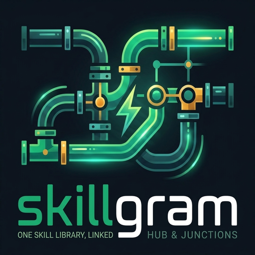

skillgram
Skill governance for AI agents. One library, a contract that gates it, every agent reading the same thing.
skillgram is a registry of SKILL.md files that lives in one directory on
disk, plus the layer that governs it: a contract every skill has to pass, provenance for each one,
declared usage per agent, the taste that decides what gets recommended, and a ledger of what was
propagated where. Claude Code, Codex, Cursor, Hermes, Reasonix, Gemini CLI, OpenCode, Kiro, Qwen
Code, Aider and Copilot all read the same library.
Links are the mechanism; governance is the product. No LLM in the loop unless you ask for one, and no claim that it can see what an agent reads.
Install
pip install skillgramOr from source, and then the whole machine in one idempotent command:
git clone https://github.com/Xhuk/skillgram
cd skillgram
python skillgram.py install --dry-run # the exact commands, nothing written
python skillgram.py install # harness -> hub -> MCP -> project scopePython 3.9+, standard library only. Junctions on Windows, symlinks on macOS/Linux.
The model
~/.agents/skills/<category>/<skill>/SKILL.md is the only real copy.lint --contract: trigger, hard rules, decisions, steps, output. Or it does not ship.SKILLMETA.json: who wrote it, when, from where, and the hash that makes updates possible.skills/ folder.use + mount give a repo exactly its set, not the whole library.skillgram mcp exposes 7 tools: search, missing, use, status, propose, touch, list.touch + list --used: what an agent says it used, per project, and from which harness. It never claims to see what it reads.seed marks what you always want recommended (seed --never for the opposite). A hub-level decision the ranking cannot outvote.How it operates
Three editorial plates, no screenshots: the loop, the files a mount leaves behind, and the arithmetic that decides which skills a repo is offered.
- Plate I — the loop, on one page
- Plate II — what
mount --applyleaves in a repo - Plate III — how a candidate earns its place
What it is not
Not a prompt manager, not a memory store, not an embeddings index. It links and administers skills your agents already read, and it never guesses which harness is asking.